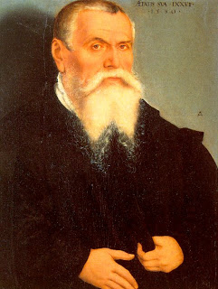

Sanhedrin 17 - The Great Sanhedrin
The Great Sanhedrin was composed on seventy one judges, since Moses is counted as part of it. Rabbi Yehudah, however, says that the Sanhedrin had only seventy judges, since Moses is not counted among them.
Moses selected six judges from each of the twelve tribes. Then he used lottery tickets which either said "Sage" or were empty. However, Eldad and Meidad remained in the camp, since they thought themselves not worthy (alternatively, they were afraid not to be selected). Instead, they were granted prophesy.
The members of the Sanhedrin must be men of height, of wisdom, of moderate old age, acquainted with witchcraft, and who know seventy languages, so that they hear the testimony directly and not through an interpreter. They should be able to prove from the Torah that an obviously non-kosher thing is in fact kosher.
Art: Lucas The Elder Cranach- Self-portrait